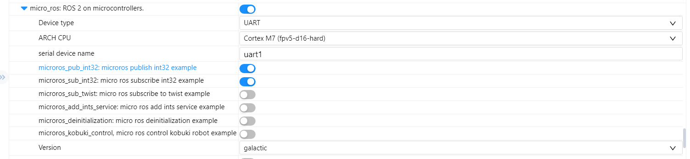

MicroROS on RT-Thread
OSPP 2022 - MicroROS on RT-Thread
Student: Haijun Du
Mentor: Han Wu
Robot Operating System (ROS) is a set of a software frameworks for robotic application development that was initially released by Stanford University in 2007. Further improvements on ROS could introduce breaking changes, making ROS1 unstable. As a result, the second generation of ROS was released (ROS2). The target platform of ROS2 is Linux, while micro_ros devote to bringing ROS2 API to MCU.
This project aims to use micro_ros on RT-Thread, which is a Real-time Operating System (RTOS). Some issues remain unsolved on the existing micro_ros software package(https://github.com/wuhanstudio/micro_ros): the UDP communication is unstable, more service examples are to be added, a precompiled static library is required for compilation of the micro_ros package, and not integrated into the micro_ros official build system to provide benchmark results.
Week 0
2022/06/27 - 2022/07/03
前提
虚拟机上安装Ubuntu20.4，ROS2安装foxy
工作内容
- microROS在linux上使用；
- microROS在rtthread上使用；
microROS在linux上使用
目的
-
初步尝试microROS；
-
查看microROS的源码的组成部分；
结果
按照First micro-ROS Application on Linux构建microROS和micro-ROS agent。由于运行ros2 run micro_ros_setup build_firmware.sh和ros2 run micro_ros_setup build_agent.sh报错：
Compiling for host environment: not cleaning path
Building firmware for host platform generic
usage: colcon [-h] [--log-base LOG_BASE] [--log-level LOG_LEVEL]
{build,test,test-result} ...
colcon: error: unrecognized arguments: --packages-up-to rosidl_typesupport_microxrcedds_c --metas src
所以直接使用colcon build
服务端：
ros2 run micro_ros_agent micro_ros_agent udp4 -p 8888
客户端：
ros2 run micro_ros_demos_rclc ping_pong
客户端报错：
[ERROR] [1656251587.172644707] [rclc]: [rclc_publisher_init_best_effort] Error in rcl_publisher_init: Undefined type support, at /home/haijun/Desktop/test/src/uros/rmw_microxrcedds/rmw_microxrcedds_c/src/rmw_publisher.c:127, at /tmp/binarydeb/ros-foxy-rcl-1.1.13/src/rcl/publisher.c:180
从error来看，应该是rclc_publisher_init_best_effort函数出错。
具体原因未知
microROS在rtthread上使用
目的
- 尝试rtt能否接入ROS2
结果
rtt客户端：
连接方式：udp
运行时，从rtt终端终端提示来说，线程能正常运行。
ros agent 服务端：
ros2 run micro_ros_agent micro_ros_agent udp4 -p 8888
[1656252343.224844] info | UDPv4AgentLinux.cpp | init | running... | port: 8888
[1656252343.225293] info | Root.cpp | set_verbose_level | logger setup | verbose_level: 4
[1656252350.362219] info | Root.cpp | create_client | create | client_key: 0x7097FB67, session_id: 0x81
[1656252350.362475] info | SessionManager.hpp | establish_session | session established | client_key: 0x7097FB67, address: 192.168.31.73:704
[1656252350.400982] info | ProxyClient.cpp | create_participant | participant created | client_key: 0x7097FB67, participant_id: 0x000(1)
重新查看rtt端的代码，发现rclc_publisher_init_default()的返回值不为零，可以定位创建publish失败。原因未知。
总结
在linux端的rtt端运行microROS均失败，定位到的错误均由于publisher_init初始化失败导致。目前不知道原因为何，猜测是不是micro-ROS agent构建有问题。
下一步计划
- rtt端测试下uart通信，看是否出现同一样问题；
- 使用docker 尝试下。
Week 1
2022/07/04 - 2022/07/10
上周问题
- 单片机和ROS2 无法连接
上周会议给出的原因和建议：
- 原因
- 使用虚拟机，导致数据多次转发，可能存在数据延迟问题；
- docker版本过旧；
- 建议：
- 使用WSL或者双系统；
- 安装新版本的docker；
- 使用串口作为测试；
本周工作
- 在window上基于RT-Thread Studio和art-pi构建micro ros (串口)工程；
- 在Ubuntu上构建
micro-ros-agent( docker & Vulcanexus)
docker
版本：20.10.17
# 运行micro-ros-agent：本地
docker run -it --net=host microros/micro-ros-agent:galactic udp4 -p 8888
# 运行micro-ros-demos
sudo docker run -it --net=host microros/micro-ros-demos bash
source install/local_setup.bash
ros2 run micro_ros_demos_rclc int32_publisher
# 查看话题
ros2 topic list
ros2 topic echo /std_msgs_msg_Int32
可以看到话题，说明micro-ros-agent没有问题
# 运行micro-ros-agent
docker run -it -v /dev:/dev --privileged microros/micro-ros-agent:galactic serial --dev /dev/ttyUSB0
# docker run -it -p 9999:9999/udp --privileged microros/micro-ros-agent:galactic udp4 -p 9999
# 单片机
microros_pub_int32
结果：
# ubuntu
[1657365773.777815] info | TermiosAgentLinux.cpp | init | running... | fd: 3
[1657365773.778163] info | Root.cpp | set_verbose_level | logger setup | verbose_level: 4
[1657365857.374839] info | Root.cpp | create_client | create | client_key: 0x10176887, session_id: 0x81
[1657365857.375037] info | SessionManager.hpp | establish_session | session established | client_key: 0x10176887, address: 0
[1657365858.394287] info | ProxyClient.cpp | create_participant | participant created | client_key: 0x10176887, participant_id: 0x000(1)
# 单片机
[micro_ros] node created
[micro_ros] publisher created
[micro_ros] timer created
[micro_ros] executor created
[micro_ros] New thread mr_pubint32
micro_ros 软件包配置

Vulcanexus
# agent 测试
ros2 run micro_ros_agent micro_ros_agent udp4 -p 8888
# demos 测试
sudo docker run -it --net=host microros/micro-ros-demos bash
source install/local_setup.bash
ros2 run micro_ros_demos_rclc int32_publisher
可以看到话题，说明基于Vulcanexus安装的micro-ros-agent没有问题
# 运行micro-ros-agent
ros2 run micro_ros_agent micro_ros_agent serial -D /dev/ttyUSB0
# 单片机
microros_pub_int32
结果和 docker一致。
结果 & 问题
结果：单片机和ROS2 无法连接的问题没有解决。从结果上来看，还是create_topic没有成功。
目前micro ros agent运行在双系统的Ubuntu上，应该不存在数据多次转化。目前猜想是不是单片机端配置有问题。
Week 2
2022/07/11 - 2022/07/17
上周任务
- 解决uart1问题（完成）；
- 在单片机端使用
subscribe int32（未完成） - 尝试Hardfloat / Softfloat（未完成）
uart1通信问题
未对uart1底层驱动进行适配，硬件没有问题
周会需帮助解决问题
- micro ros 软件包编译报错
arm-none-eabi-gcc 版本：
arm-none-eabi-gcc -v
Using built-in specs.
COLLECT_GCC=arm-none-eabi-gcc
COLLECT_LTO_WRAPPER=/home/haijun/env_released_1.2.0/gcc-arm-none-eabi-5_4-2016q2/bin/../lib/gcc/arm-none-eabi/5.4.1/lto-wrapper
Target: arm-none-eabi
Configured with: /home/build/work/GCC-5-0-build/src/gcc/configure --target=arm-none-eabi --prefix=/home/build/work/GCC-5-0-build/install-native --libexecdir=/home/build/work/GCC-5-0-build/install-native/lib --infodir=/home/build/work/GCC-5-0-build/install-native/share/doc/gcc-arm-none-eabi/info --mandir=/home/build/work/GCC-5-0-build/install-native/share/doc/gcc-arm-none-eabi/man --htmldir=/home/build/work/GCC-5-0-build/install-native/share/doc/gcc-arm-none-eabi/html --pdfdir=/home/build/work/GCC-5-0-build/install-native/share/doc/gcc-arm-none-eabi/pdf --enable-languages=c,c++ --enable-plugins --disable-decimal-float --disable-libffi --disable-libgomp --disable-libmudflap --disable-libquadmath --disable-libssp --disable-libstdcxx-pch --disable-nls --disable-shared --disable-threads --disable-tls --with-gnu-as --with-gnu-ld --with-newlib --with-headers=yes --with-python-dir=share/gcc-arm-none-eabi --with-sysroot=/home/build/work/GCC-5-0-build/install-native/arm-none-eabi --build=i686-linux-gnu --host=i686-linux-gnu --with-gmp=/home/build/work/GCC-5-0-build/build-native/host-libs/usr --with-mpfr=/home/build/work/GCC-5-0-build/build-native/host-libs/usr --with-mpc=/home/build/work/GCC-5-0-build/build-native/host-libs/usr --with-isl=/home/build/work/GCC-5-0-build/build-native/host-libs/usr --with-cloog=/home/build/work/GCC-5-0-build/build-native/host-libs/usr --with-libelf=/home/build/work/GCC-5-0-build/build-native/host-libs/usr --with-host-libstdcxx='-static-libgcc -Wl,-Bstatic,-lstdc++,-Bdynamic -lm' --with-pkgversion='GNU Tools for ARM Embedded Processors' --with-multilib-list=armv6-m,armv7-m,armv7e-m,armv7-r,armv8-m.base,armv8-m.main
Thread model: single
gcc version 5.4.1 20160609 (release) [ARM/embedded-5-branch revision 237715] (GNU Tools for ARM Embedded Processors)
编译报错：
scons
scons: Reading SConscript files ...
Newlib version:unknown
scons: done reading SConscript files.
scons: Building targets ...
scons: building associated VariantDir targets: build
CC build/packages/micro_ros-galactic/src/rtt_serial_transports.o
packages/micro_ros-galactic/src/rtt_serial_transports.c:47:16: error: conflicting types for '__ctype_ptr__'
char __EXPORT *__ctype_ptr__ = (char *) _ctype_b + 127;
^
In file included from packages/micro_ros-galactic/src/rtt_serial_transports.c:5:0:
/home/haijun/env_released_1.2.0/gcc-arm-none-eabi-5_4-2016q2/arm-none-eabi/include/ctype.h:46:23: note: previous declaration of '__ctype_ptr__' was here
extern __IMPORT char *__ctype_ptr__;
^
In file included from packages/micro_ros-galactic/src/rtt_serial_transports.c:52:0:
packages/micro_ros-galactic/src/micro_ros_rtt.h:20:44: warning: 'struct timespec' declared inside parameter list
int clock_gettime(clockid_t unused, struct timespec *tp);
^
packages/micro_ros-galactic/src/micro_ros_rtt.h:20:44: warning: its scope is only this definition or declaration, which is probably not what you want
packages/micro_ros-galactic/src/rtt_serial_transports.c:71:5: error: conflicting types for 'clock_gettime'
int clock_gettime(clockid_t unused, struct timespec *tp)
^
In file included from packages/micro_ros-galactic/src/rtt_serial_transports.c:52:0:
packages/micro_ros-galactic/src/micro_ros_rtt.h:20:5: note: previous declaration of 'clock_gettime' was here
int clock_gettime(clockid_t unused, struct timespec *tp);
^
scons: *** [build/packages/micro_ros-galactic/src/rtt_serial_transports.o] Error 1
scons: building terminated because of errors.
猜测原因：GCC版本问题
上次周会下载的arm-none-eabi-gcc 5.4.1因为网络问题，似乎没有下载全，我从该链接下载 ：
选择： 5-2016-q2-update
Week 3
2022/07/18 - 2022/07/24
Break
week4
2022/07/25 - 2022/07/31
1.遗留的问题
单片机端和PC端的create_topic没有成功，估计是/ libc (POSIX) or clock_gettime的问题
2. 任务
- 由于将rtthread的版本降低到4.0.1尝试运行micro -ros软件包；
- 编译基于cortex-m7的micro -ros的静态编译库，使micro -ros软件包能在art-pi上运行；
3. 工作情况
3.1 降低rtthread的版本
rtthread4.0.1没有art-pi的bsp，考虑到以后会使用rtthread的最新版本，因此配置art-pi的意义不大，终止该任务；
3.2 静态编译micro -ros
参考网址：
Creating custom static micro-ROS library
由于VPN的原因，导致download的仓库不全，无法进行正常的编译；
4. 周会讨论问题
- VPN
- 如何生成静态库；
5. 下周任务
- 解决Ubuntu端的vpn问题；
- 继续完成为art-pi生成静态库的任务，期望下周能在art-pi运行micro -ros；